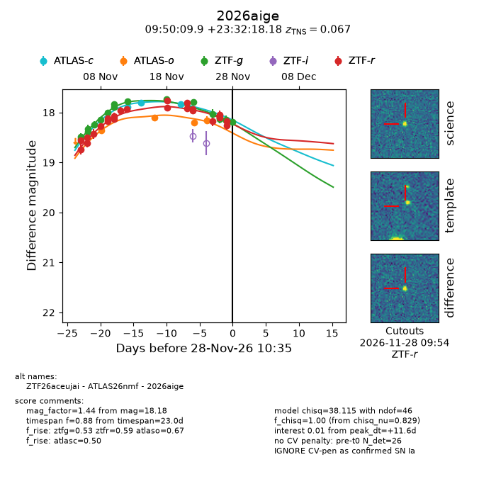
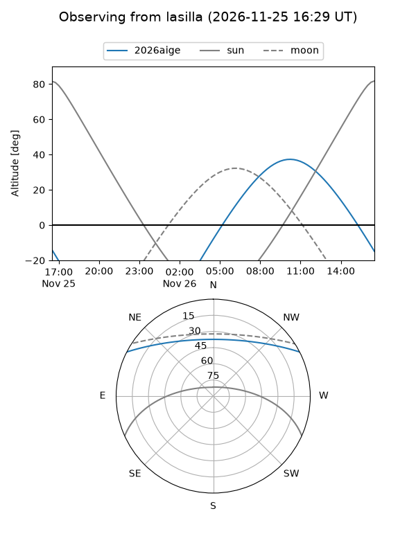
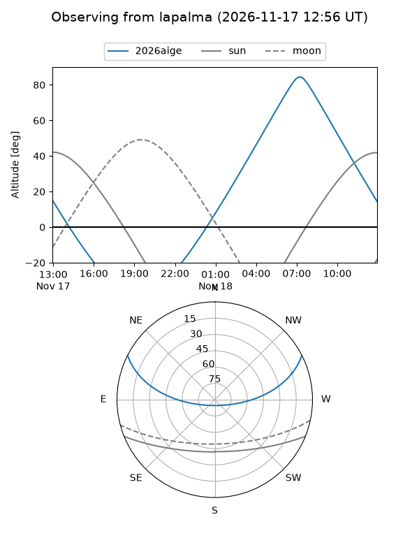
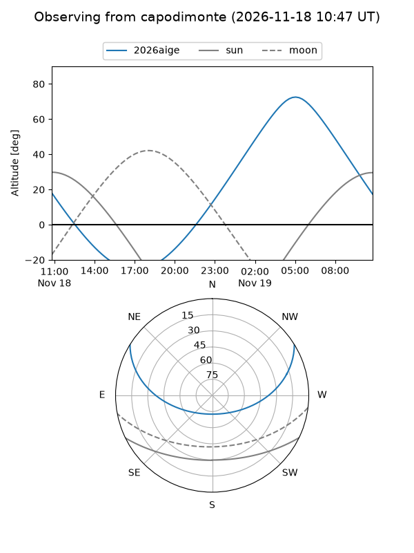
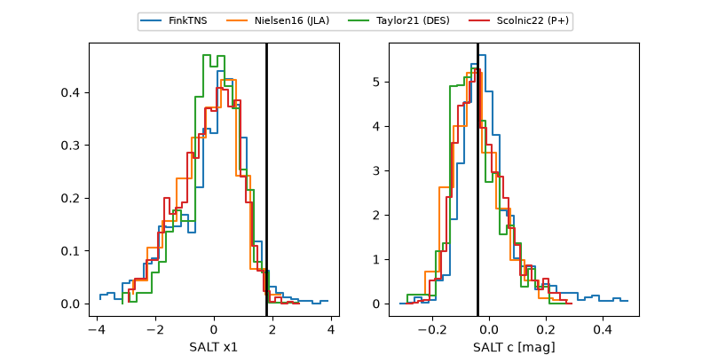

2026aige
Target 2026aige at 2026-11-27 12:06
Aliases and brokers:
FINK-ZTF: ztf.fink-portal.org/ZTF26aceujai
Lasair-ZTF: lasair-ztf.lsst.ac.uk/objects/ZTF26aceujai
ALeRCE-ZTF: alerce.online/object/ZTF26aceujai
YSE-PZ: ziggy.ucolick.org/yse/transient_detail/2026aige
TNS name: wis-tns.org/object/2026aige
Direct TNS query: direct search
alt names
ZTF26aceujai (ztf,fink_ztf)
2026aige (tns,yse)
ATLAS26nmf (atlas)
Coordinates:
equatorial (ra, dec) = 147.5412,+23.53838
equatorial (HMS+DMS) = 09:50:09.89,+23:32:18.18
galactic (l, b) = (207.5445,+49.09903)
Flags:
TNS type: SN Ia
TNS redshift: 0.0670
peak dt: +10.6
Photometry:
last atlasc=17.83, atlaso=18.16, ztfg=18.16, ztfr=18.04
3 atlasc, 4 atlaso, 17 ztfg, 21 ztfr detections
Lightcurve

Visibility



Additional plots
